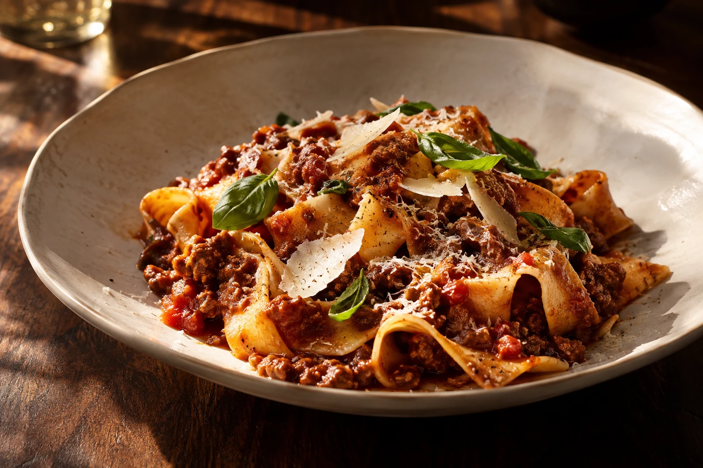
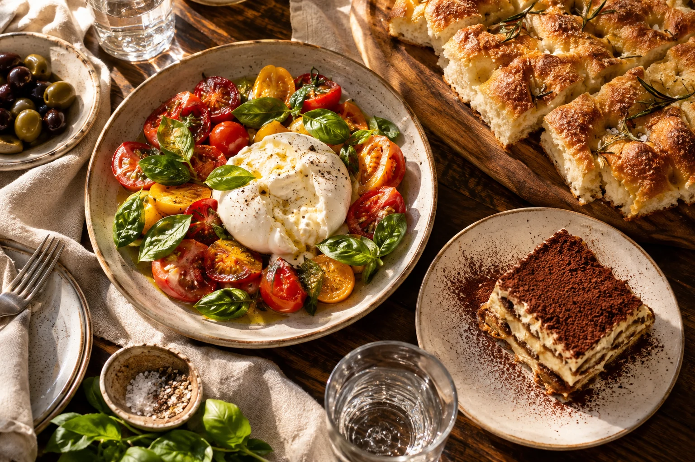
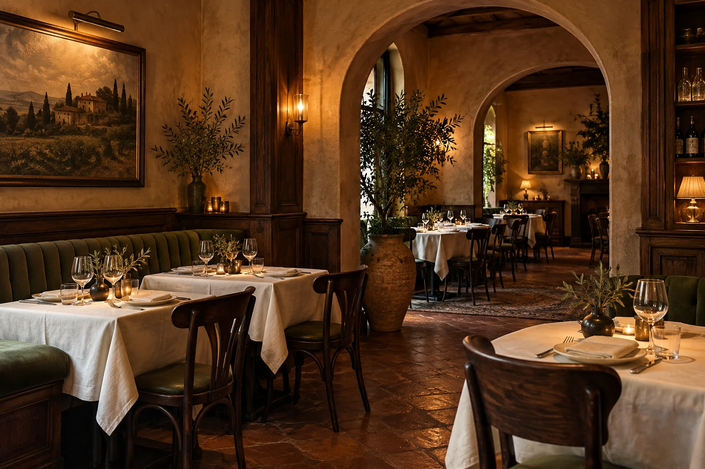

LA CUCINA ITALIANA · MIT LIEBE ZUM WESENTLICHEN
Gute Abende
beginnen bei Tisch.
Pasta, ein Glas Wein und Zeit füreinander.
So schmeckt unsere Idee von Italien.
01 — LA CUCINA
Keine große Geste.
Nur richtig gutes Essen.
Eine reife Tomate. Gutes Olivenöl. Pasta, die die Sauce aufnimmt. Italienische Küche lebt von den Dingen, die man schmeckt.
Die Idee hinter Casa Oliva ist einfach: eine kleine, stimmige Karte und Gerichte, die am gemeinsamen Tisch am besten schmecken. Unaufgeregt, großzügig und mit Freude am Detail.
Entdecken, worauf Sie Lust haben ↗
DA CONDIVIDERE — ZUM TEILEN GEMACHTIL PIACERE DI STARE INSIEME
Das Beste
steht in der Mitte.
Ein Stück Focaccia weiterreichen. Die letzte Tomate teilen. Noch etwas bestellen, weil der Abend gerade so schön ist.
Bei uns ist der Tisch der Mittelpunkt.
Mit Antipasti beginnen ↗
03 — LA CASA
Ein Ort, an dem
aus Essen ein Abend wird.
Warmes Licht. Gedeckte Tische. Das leise Klirren der Gläser.
Unsere Vorstellung von italienischer Gastfreundschaft.
04 — A PRESTO
WIR SEHEN UNS AM TISCH.Bleiben Sie
noch ein bisschen.
Ein Restaurant beginnt mit einer Idee. Und mit dem Gefühl, das seine Gäste mit nach Hause nehmen.
Casa Oliva ist ein fiktives Restaurant-Konzept von LL Collective Studio. Es gibt keinen realen Betrieb und keine Tischreservierung. Für ein echtes Restaurant ergänzen wir Standort, Öffnungszeiten und einen passenden Reservierungsweg.
Noch einmal in die Karte schauen ↗